Every time you log out, Amnesia wipes your history, downloads and app data. Your logins, and the files you choose, stay safe in an encrypted vault. Setiap kali kamu logout, Amnesia menghapus riwayat, download dan data app. Login kamu, dan file yang kamu pilih, tetap aman di brankas terenkripsi.
brew install --cask navi-crwn/tap/amnesiaFree & open source · macOS 15+ · Apple Silicon & IntelGratis & open source · macOS 15+ · Apple Silicon & Intel
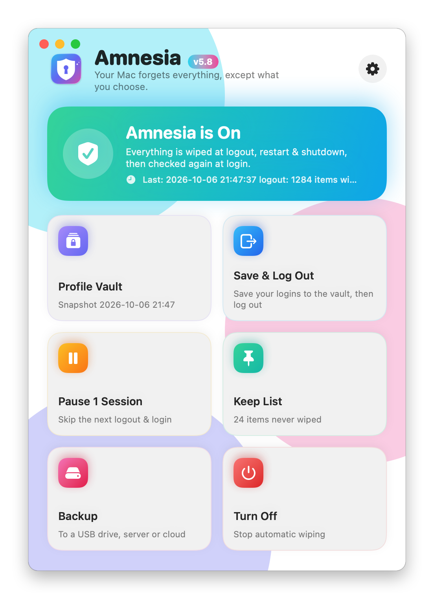
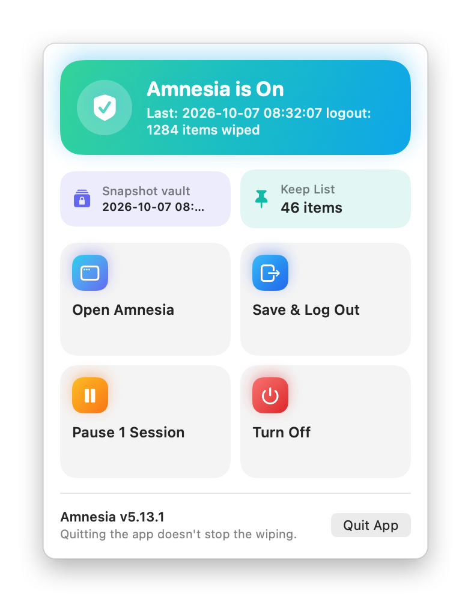
Everything Amnesia can do, at a glance. Scroll down for each feature with screenshots, a full tutorial and the FAQ.Semua yang bisa dilakukan Amnesia, sekilas. Gulir ke bawah untuk penjelasan tiap fitur lengkap dengan screenshot, tutorial lengkap, dan FAQ.
Runs at logout, restart and shutdown, then checks once more at login.Jalan saat logout, restart, dan shutdown, lalu dicek sekali lagi saat login.
Chrome, WhatsApp, Claude and your coding tools, locked with AES-256. One password brings them back.Chrome, WhatsApp, Claude, dan alat coding dikunci AES-256. 1 password untuk mengembalikan semuanya.
Chrome, Brave, Edge, Arc, Vivaldi and Opera can be saved without caches: about 1 GB becomes 150 MB. One switch per browser.Chrome, Brave, Edge, Arc, Vivaldi, dan Opera bisa disimpan tanpa cache: sekitar 1 GB jadi 150 MB. Satu saklar per browser.
One click saves your logins, then logs out. If saving fails, the logout is cancelled.1 klik menyimpan login, lalu logout. Kalau gagal menyimpan, logout dibatalkan.
Forgot Save & Log Out? A normal logout still saves the apps that changed first.Lupa menekan Simpan & Logout? Logout biasa tetap menyimpan dulu app yang berubah.
A Keep folder for your files, and a Keep List for apps like VPNs and SSH keys.Folder Keep untuk file kamu, dan Keep List untuk app seperti VPN dan kunci SSH.
"What Gets Deleted" lists everything before anything is deleted. Logout can wait for your OK."Yang Akan Dihapus" menampilkan semuanya sebelum ada yang dihapus. Logout bisa menunggu persetujuan kamu.
Skip the next logout and login once, without turning Amnesia off.Lewati 1 kali logout dan login berikutnya, tanpa mematikan Amnesia.
USB drive, your own server over SSH, Google Drive, Dropbox, OneDrive, Box or pCloud. Daily or weekly, and you can check a backup file.Flashdisk, server sendiri lewat SSH, Google Drive, Dropbox, OneDrive, Box, atau pCloud. Harian atau mingguan, dan file backup bisa dicek.
When the Mac was cleaned, which apps were saved, when backups ran. Never file names.Kapan Mac dibersihkan, app apa yang disimpan, kapan backup jalan. Tanpa nama file.
Type it, or get the password wrong 3 times, and the vault is gone for good.Ketik kata itu, atau salah password 3 kali, dan vault terhapus selamanya.
Take your vault and the Keychain keys with you, so your apps open logged in on the new Mac.Bawa vault dan kunci Keychain, jadi app di Mac baru langsung terbuka dalam keadaan login.
Once it's set up, this is all you do.Setelah disiapkan, cukup ini yang kamu lakukan.
Your Mac starts clean. Open Profile Vault, type your password, press Restore Profiles.Mac mulai bersih. Buka Profile Vault, ketik password, tekan Restore Profil.
All your logins are back. Keep files you need tomorrow in your Keep folder.Semua login kembali. Simpan file yang masih perlu besok di folder Keep.
Your logins go back into the vault, then you're logged out.Login kamu masuk lagi ke vault, lalu kamu di-logout.
Everything else is wiped. No traces left.Sisanya dihapus. Tanpa jejak.
Nothing is deleted until you press Turn On, and you can always check the list first.Tidak ada yang dihapus sampai kamu menekan Aktifkan, dan daftarnya selalu bisa kamu cek dulu.
Screenshots come straight from the app (English or Indonesian, follows the language switch above).Screenshot diambil langsung dari app (bahasa Inggris atau Indonesia, mengikuti pilihan bahasa di atas).
The colored card shows whether Amnesia is ON, OFF or paused, and when it last cleaned. The big button on it turns Amnesia on or off. Below it:Kartu berwarna menunjukkan Amnesia sedang AKTIF, MATI, atau dijeda, dan kapan terakhir membersihkan. Tombol besar di kartu itu untuk mengaktifkan atau mematikan Amnesia. Di bawahnya:
The gear at the top right opens Settings. Close the window and Amnesia keeps running as an icon in the menu bar.Ikon roda gigi di kanan atas membuka Pengaturan. Kalau jendela ditutup, Amnesia tetap jalan sebagai ikon di menu bar.
Click the Amnesia icon in the menu bar for the quick panel: status, Save & Log Out, Pause, and a button to open the main window. With "Open at login" on (Settings), the icon appears by itself after every login, without a window.Klik ikon Amnesia di menu bar untuk panel cepat: status, Simpan & Logout, Jeda, dan tombol membuka jendela utama. Kalau "Buka saat login" nyala (Pengaturan), ikon ini muncul sendiri setiap login, tanpa jendela.
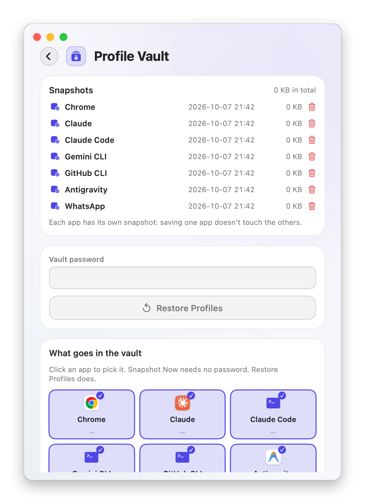
An encrypted safe for your app logins. It's what lets you log in to a clean Mac and have Chrome, WhatsApp, Claude and your coding tools ready in one step.Brankas terenkripsi untuk login app kamu. Inilah yang membuat Mac yang sudah bersih bisa langsung dipakai: Chrome, WhatsApp, Claude, dan alat coding siap dalam 1 langkah.
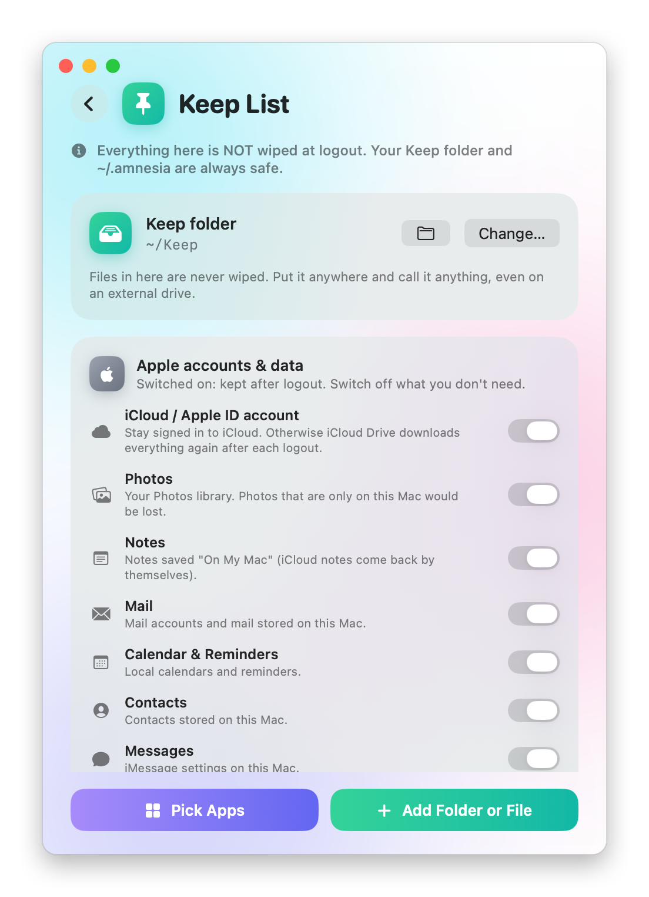
The Keep folder (~/Keep by default, you can pick another) holds files that are never wiped. The Keep List holds app data that should survive every logout untouched, like VPN apps, SSH keys or your Apple account.Folder Keep (bawaan ~/Keep, bisa pilih folder lain) berisi file yang tidak pernah dihapus. Keep List berisi data app yang harus tetap utuh setiap logout, seperti app VPN, kunci SSH, atau akun Apple.
Amnesia scans your apps and suggests what to keep. Remove an item and it's wiped from the next logout on.Amnesia memindai app kamu dan memberi saran apa yang disimpan. Item yang dikeluarkan ikut dibersihkan mulai logout berikutnya.
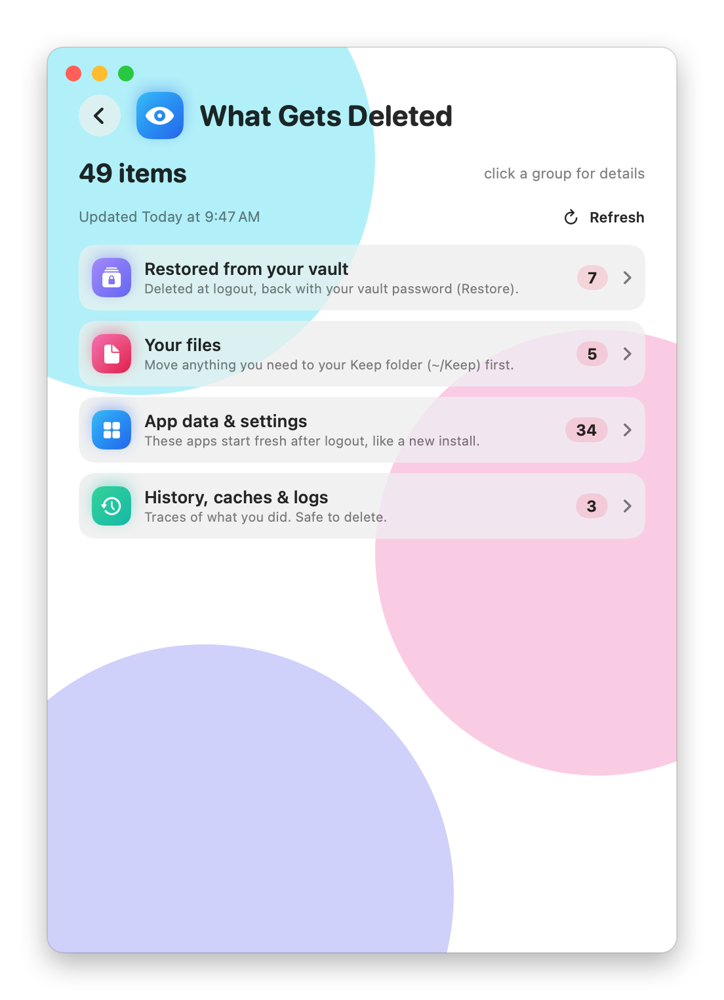
The full list of what the next logout would delete, grouped by meaning: your files, browser data, app data, things that come back from the vault, and macOS system data. Nothing is deleted when you open it.Daftar lengkap yang akan dihapus saat logout berikutnya, dikelompokkan menurut artinya: file kamu, data browser, data app, yang kembali dari vault, dan data sistem macOS. Membukanya tidak menghapus apa pun.
With "Check before logout" on, logout, restart and shutdown wait on this page until you press Continue or Cancel.Kalau "Cek dulu sebelum logout" nyala, logout, restart, dan shutdown menunggu di halaman ini sampai kamu menekan Lanjut atau Batal.
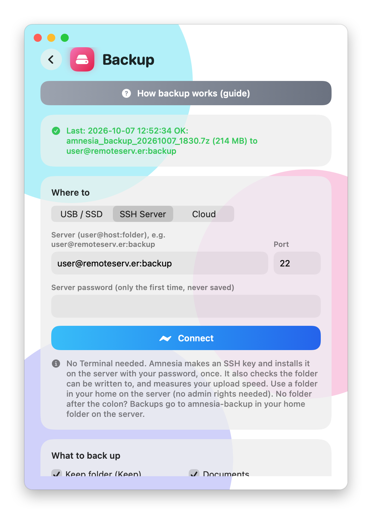
An encrypted .7z copy (AES-256, file names too) of your Keep folder, chosen folders and the Profile Vault.Salinan .7z terenkripsi (AES-256, nama file juga) dari folder Keep, folder pilihan, dan Profile Vault.
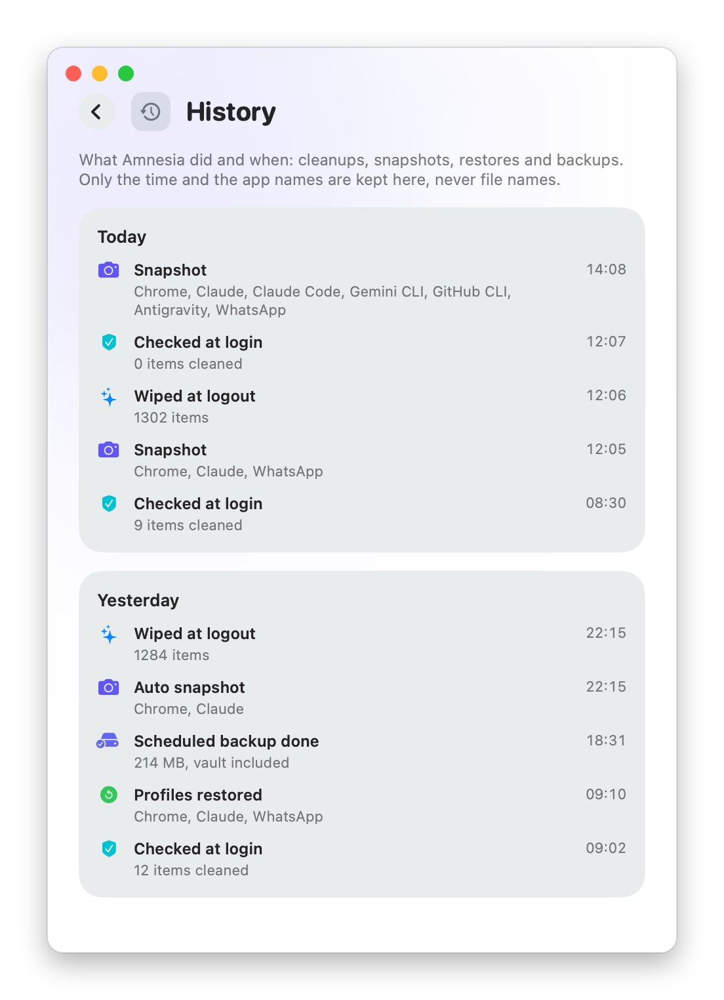
What Amnesia did and when, grouped by day: wiped at logout, checked at login, snapshots (and which apps), restores, backups and failed backups. Only times and app names are kept, never file names.Apa yang dilakukan Amnesia dan kapan, dikelompokkan per hari: dibersihkan saat logout, dicek saat login, snapshot (dan app apa saja), restore, backup, dan backup yang gagal. Yang dicatat hanya waktu dan nama app, tidak pernah nama file.
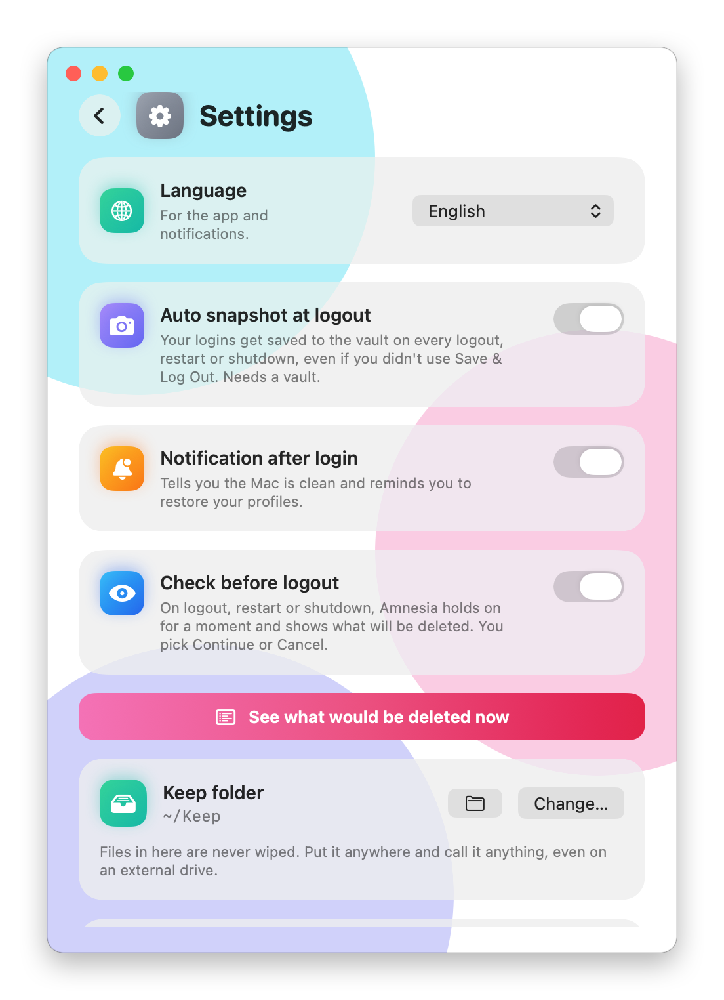
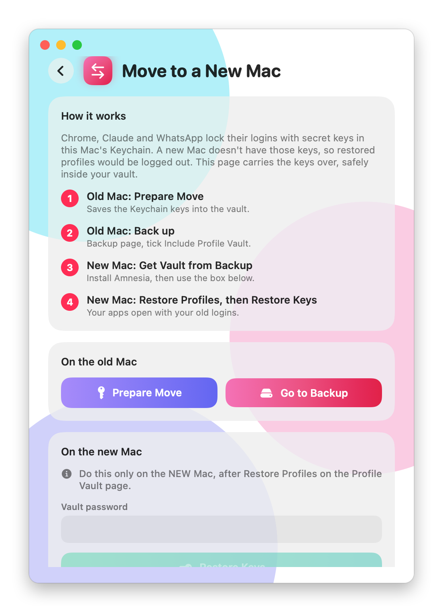
Chrome, Claude and WhatsApp lock their logins with secret keys in the Mac's Keychain. Prepare Move saves those keys into the vault, a backup carries everything over, and on the new Mac you take the vault from the backup, restore your profiles, then Restore Keys.Chrome, Claude, dan WhatsApp mengunci login dengan kunci rahasia di Keychain Mac. Siapkan Pindah menyimpan kunci itu ke vault, backup membawa semuanya, lalu di Mac baru kamu ambil vault dari backup, Restore Profil, lalu Pulihkan Kunci.
Every important popup says, in colored boxes, what will happen, what gets deleted, what stays, and what you need to do.Setiap popup penting menjelaskan dalam kotak berwarna: apa yang akan terjadi, apa yang dihapus, apa yang tetap tersimpan, dan apa yang perlu kamu lakukan.
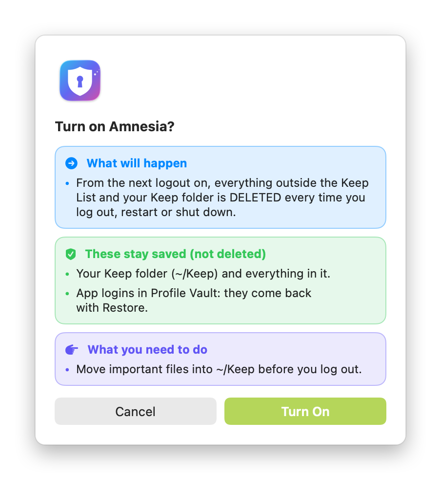
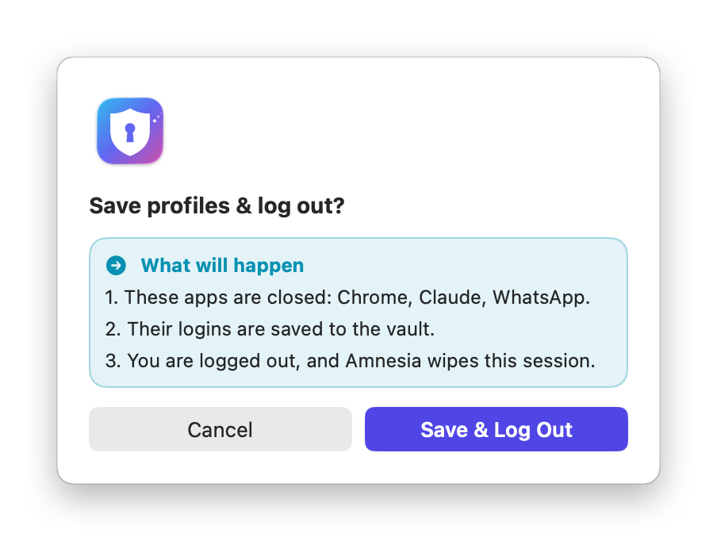
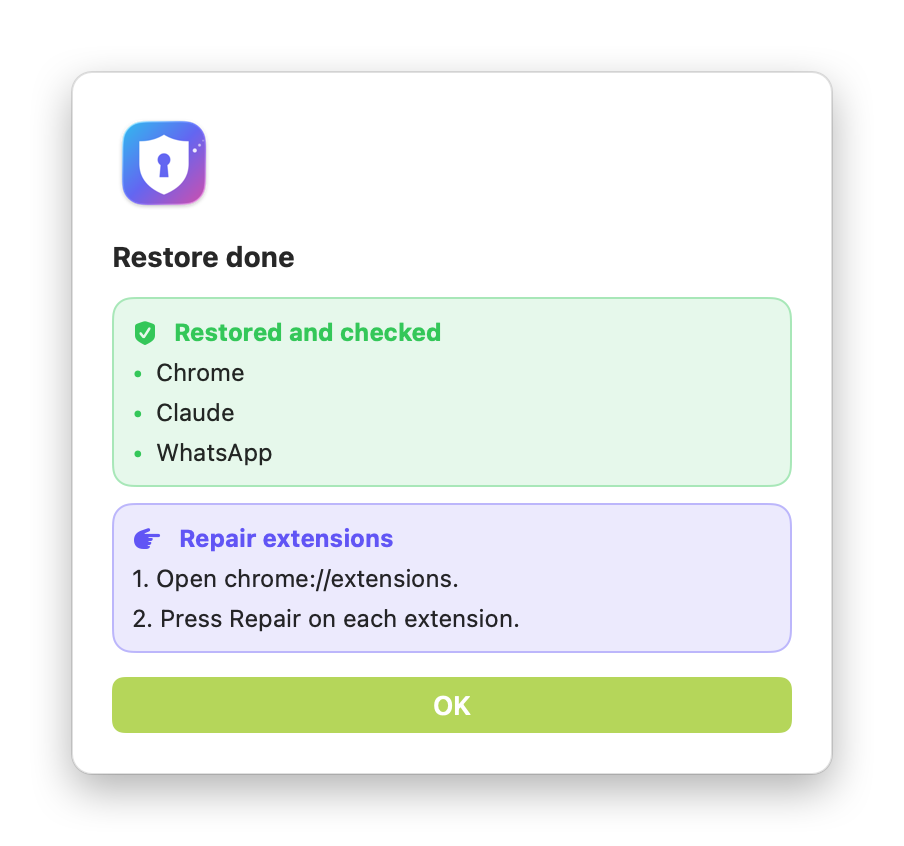
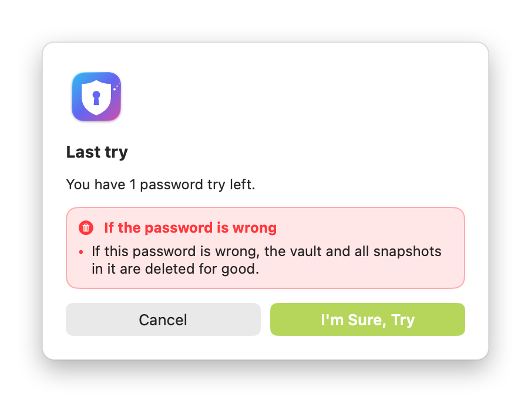
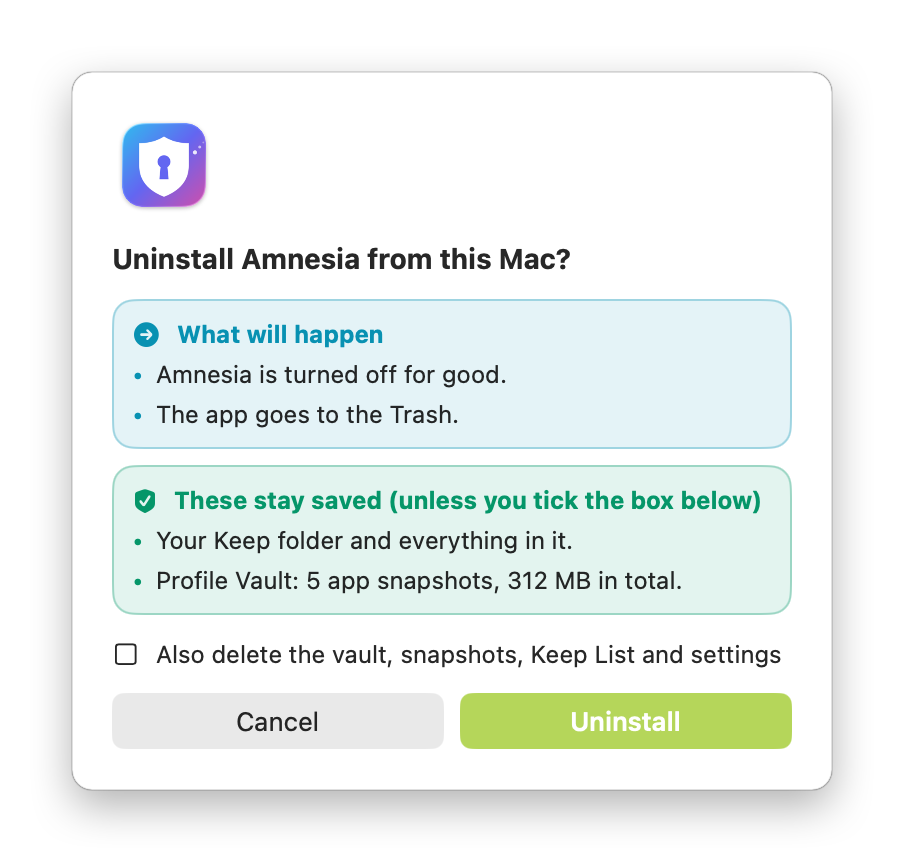
Amnesia really deletes data. Once you turn it on, everything outside your Keep folder and Keep List is deleted at every logout, restart and shutdown. It doesn't go to the Trash and can't be undone. Forget the vault password and nobody can open it. Amnesia is free software, provided as is, and you use it at your own risk.Amnesia benar-benar menghapus data. Setelah aktif, semua di luar folder Keep dan Keep List dihapus setiap logout, restart, dan shutdown. Tidak masuk Trash dan tidak bisa dibatalkan. Lupa password vault, tidak ada yang bisa membukanya. Amnesia adalah software gratis, diberikan apa adanya, dan risiko pemakaian ada di kamu.
brew install --cask navi-crwn/tap/amnesiaUpdate later with brew upgrade (turn Amnesia off first).Update nanti dengan brew upgrade (matikan Amnesia dulu).
Get the .dmg from Releases, open it, and drag Amnesia onto Applications. The app isn't signed by Apple yet, so the first time: System Settings → Privacy & Security → Open Anyway.Ambil .dmg dari Releases, buka, lalu seret Amnesia ke Applications. App ini belum ditandatangani Apple, jadi pertama kali: System Settings → Privacy & Security → Open Anyway.
From a fresh install to your first clean logout. Take your time: nothing is deleted before step 8.Dari baru dipasang sampai logout bersih pertama. Santai saja: tidak ada yang dihapus sebelum langkah 8.
Pick your language. The tour explains that Amnesia really deletes data; tick that you understand.Pilih bahasa. Tur menjelaskan bahwa Amnesia benar-benar menghapus data; centang bahwa kamu paham.
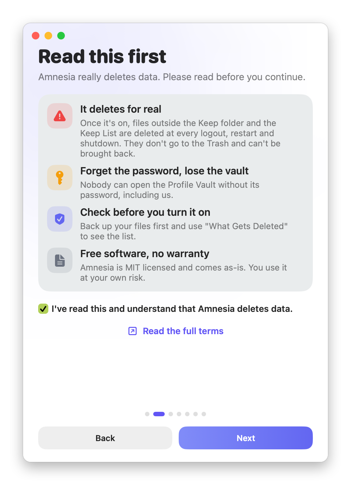
Amnesia checks its engine, 7-Zip, Apple Command Line Tools and Full Disk Access. Press the buttons for anything that isn't green. Full Disk Access: System Settings → Privacy & Security → Full Disk Access → switch Amnesia on, then Quit & Reopen.Amnesia mengecek mesinnya, 7-Zip, Apple Command Line Tools, dan Akses Disk Penuh. Tekan tombolnya untuk yang belum hijau. Akses Disk Penuh: System Settings → Privacy & Security → Full Disk Access → nyalakan Amnesia, lalu Tutup & Buka Lagi.
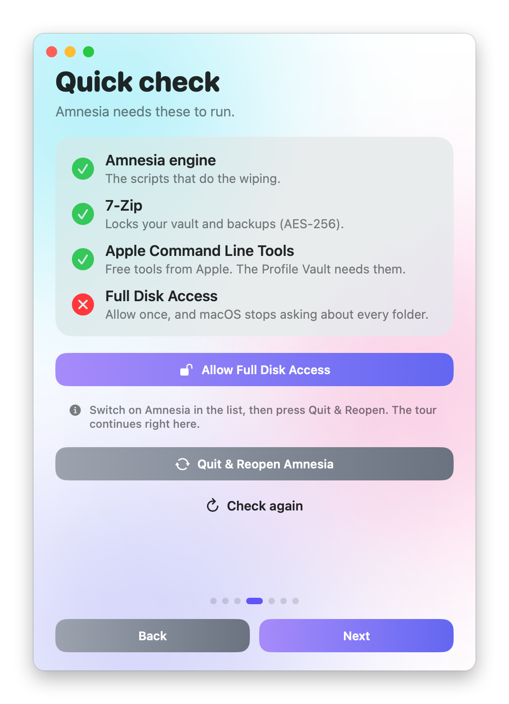
Choose your Keep folder and switch on the apps to keep (VPNs are suggested). You can change this later on the Keep List page.Pilih folder Keep dan nyalakan app yang mau disimpan (VPN sudah disarankan). Nanti bisa diubah di halaman Keep List.
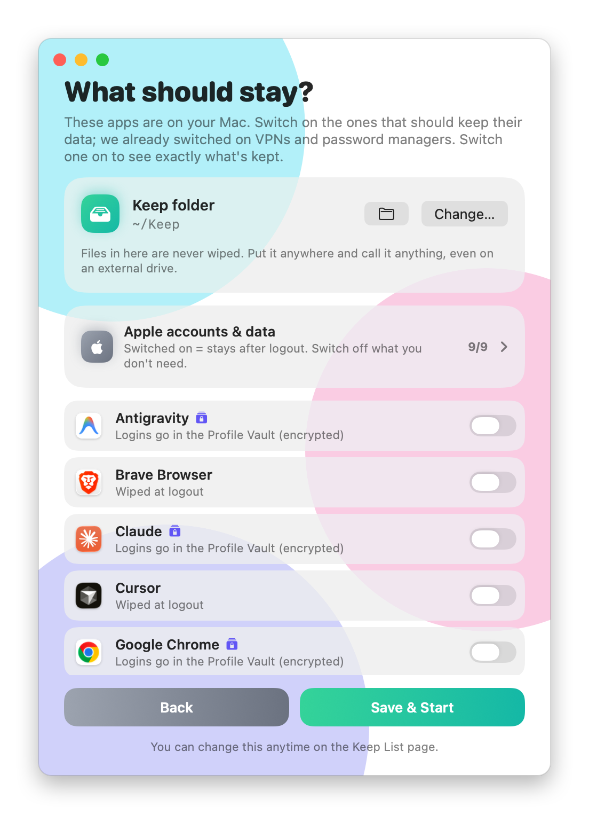
Open Profile Vault, type a password (at least 12 characters) twice. Optional: a panic word. Write the password down somewhere safe: it can't be recovered.Buka Profile Vault, ketik password (minimal 12 karakter) dua kali. Opsional: kata panik. Catat password di tempat aman: tidak bisa dipulihkan.
Click the apps to save, choose light or full for browsers, log in to those apps as usual, then press Snapshot Now.Klik app yang mau disimpan, pilih ringan atau lengkap untuk browser, login ke app itu seperti biasa, lalu tekan Snapshot Sekarang.
Open Backup, pick where to, keep "Include Profile Vault" ticked, press Back Up Now. Then Check a Backup File to be sure it opens. If the vault is ever lost, this backup brings it back.Buka Backup, pilih tujuan, biarkan "Sertakan Profile Vault" tercentang, tekan Backup Sekarang. Lalu Cek File Backup untuk memastikan bisa dibuka. Kalau suatu saat vault hilang, backup inilah yang mengembalikannya.
Open What Gets Deleted. Anything there you still need? Move it into your Keep folder or add it to the Keep List.Buka Yang Akan Dihapus. Ada yang masih perlu? Pindahkan ke folder Keep atau tambahkan ke Keep List.
Press Turn On Amnesia on the home card. Read the popup: this session stays safe until you log out.Tekan Aktifkan Amnesia di kartu halaman utama. Baca popup-nya: sesi sekarang tetap aman sampai kamu logout.
Done for the day? Press Save & Log Out. After the next login, open Profile Vault, type the password and press Restore Profiles. If the browser was saved light, press Repair on its extensions page.Selesai kerja? Tekan Simpan & Logout. Setelah login berikutnya, buka Profile Vault, ketik password, lalu tekan Restore Profil. Kalau browser disimpan ringan, tekan Repair di halaman extension-nya.
Always: press Turn Off, install the update, open Amnesia, press Turn On. Installing while Amnesia is on can be treated like a logout.Selalu: tekan Matikan, pasang update, buka Amnesia, tekan Aktifkan. Memasang saat Amnesia aktif bisa dianggap seperti logout.
Three words borrowed from medicine, so you know exactly what kind of forgetting happens.Tiga istilah yang dipinjam dari dunia medis, supaya jelas lupa yang seperti apa yang terjadi.
The normal cleanup at every logout, restart and shutdown. Everything is forgotten except what you chose: the Keep List, your Keep folder and the Profile Vault.Pembersihan biasa setiap logout, restart, dan shutdown. Semuanya dilupakan kecuali yang kamu pilih: Keep List, folder Keep, dan Profile Vault.
Everything is gone with no way back: the panic button (3 wrong vault passwords or the panic word), Uninstall with "also delete the vault" ticked, or a cleanup while you have no snapshot and no backup.Semuanya hilang tanpa jalan kembali: tombol darurat (salah password vault 3 kali atau kata panik), Hapus Amnesia dengan "hapus juga vault" dicentang, atau pembersihan saat belum ada snapshot dan backup.
Bringing memories back: Restore Profiles from the vault, Get Vault from Backup, Move Mac, and Restore Files, which puts files from a backup back where they were.Memanggil kembali ingatan: Restore Profil dari vault, Ambil Vault dari Backup, Pindah Mac, dan Pulihkan File yang mengembalikan file dari backup ke tempat asalnya.
No. Amnesia has no servers, no accounts, no tracking and no analytics. Everything runs on your Mac. Only if you set up a server or cloud backup does a locked .7z file leave your Mac, straight to the place you picked, and nobody can read it without your password.Tidak. Amnesia tidak punya server, tidak pakai akun, tidak melacak, dan tidak mengumpulkan data. Semua jalan di Mac kamu. Hanya kalau kamu mengatur backup ke server atau cloud, file .7z terkunci keluar dari Mac, langsung ke tempat yang kamu pilih, dan tidak ada yang bisa membacanya tanpa password kamu.
Yes. Amnesia stays off until you press Turn On. What Gets Deleted (or Settings → "See what would be deleted now") shows the full list first.Bisa. Amnesia tetap mati sampai kamu menekan Aktifkan. Yang Akan Dihapus (atau Pengaturan → "Lihat yang akan dihapus sekarang") menampilkan daftarnya dulu.
At logout they're moved into Amnesia's own folder (~/.amnesia-trash), which is emptied in the background after your next login. They don't go to the macOS Trash and can't be brought back. Anything you need goes into the Keep folder, the Keep List or the vault.Saat logout semuanya dipindah ke folder milik Amnesia (~/.amnesia-trash), yang dikosongkan di background setelah login berikutnya. Tidak masuk Trash macOS dan tidak bisa dikembalikan. Yang masih perlu, simpan di folder Keep, Keep List, atau vault.
The check at login catches it: if the last logout didn't finish, the login check does the full cleanup.Cek saat login menanganinya: kalau logout terakhir tidak selesai, cek saat login membersihkan penuh.
So macOS doesn't ask about every folder (Desktop, Documents, Downloads…), and so the wipe at logout can actually reach them. You allow it once.Supaya macOS tidak bertanya per folder (Desktop, Documents, Downloads…), dan supaya pembersihan saat logout benar-benar bisa menjangkaunya. Cukup izinkan sekali.
No. Amnesia only works inside your own user account and never uses sudo. macOS asks for your login password only when you save Keychain keys for a move to a new Mac.Tidak. Amnesia hanya bekerja di dalam akun kamu sendiri dan tidak pernah memakai sudo. macOS meminta password login hanya saat kamu menyimpan kunci Keychain untuk pindah ke Mac baru.
Then nobody can open it, including you. Make a new vault and log in to your apps again. Still know it and want a new one? Use the Password button on the Profile Vault page.Tidak ada yang bisa membukanya, termasuk kamu. Buat vault baru, lalu login ulang ke app kamu. Masih ingat dan mau ganti? Pakai tombol Password di halaman Profile Vault.
The vault is deleted for good. Before the last try Amnesia warns you. If the vault was in a backup, get it back on Move to a New Mac → Get Vault from Backup.Vault dihapus selamanya. Sebelum percobaan terakhir, Amnesia memberi peringatan. Kalau vault pernah ikut backup, ambil lagi di Pindah Mac → Ambil Vault dari Backup.
Light (browsers only) leaves out caches and the program files of Web Store extensions, so Chrome goes from about 1 GB to 150 MB. Logins, bookmarks, extension settings and extensions you installed another way are always saved. After a light Restore, press Repair on the browser's extensions page. Full saves everything except caches.Ringan (hanya browser) tidak menyimpan cache dan file program extension dari Web Store, jadi Chrome dari sekitar 1 GB jadi 150 MB. Login, bookmark, pengaturan extension, dan extension yang dipasang dengan cara lain selalu disimpan. Setelah Restore ringan, tekan Repair di halaman extension browser. Lengkap menyimpan semuanya kecuali cache.
Only for the apps it saves, and only after the new snapshot is saved successfully. Apps not in the list keep their snapshot. If saving fails, you're not logged out.Hanya untuk app yang disimpan, dan hanya setelah snapshot baru berhasil disimpan. App yang tidak ada di daftar tetap memakai snapshot lamanya. Kalau gagal menyimpan, kamu tidak di-logout.
When you log out, restart or shut down the normal way, Amnesia first saves the apps whose data changed (at most 150 seconds), then cleans. It's skipped if you just used Save & Log Out or Pause 1 Session is on. Turn it off and a normal logout cleans without saving.Saat kamu logout, restart, atau mematikan Mac dengan cara biasa, Amnesia lebih dulu menyimpan app yang datanya berubah (paling lama 150 detik), baru membersihkan. Dilewati kalau kamu baru saja menekan Simpan & Logout atau sedang Jeda 1 Sesi. Kalau dimatikan, logout biasa langsung membersihkan tanpa menyimpan.
An optional word you choose. Typed in the password box, it deletes the vault right away (and, if you chose so, empties the Keep folder too).Kata opsional pilihan kamu. Kalau diketik di kolom password, vault langsung dihapus (dan, kalau kamu pilih, folder Keep juga dikosongkan).
No. For a server, type its password once and Amnesia installs an SSH key. For Google Drive, Dropbox, OneDrive, Box or pCloud, you log in through your browser.Tidak. Untuk server, ketik password-nya sekali dan Amnesia memasang kunci SSH. Untuk Google Drive, Dropbox, OneDrive, Box, atau pCloud, kamu login lewat browser.
On the Backup page press Check a Backup File and pick the .7z. Amnesia opens the vault inside it in a temporary folder, shows which apps are in it, then deletes the temporary folder. Your own vault isn't touched.Di halaman Backup tekan Cek File Backup lalu pilih file .7z-nya. Amnesia membuka vault di dalamnya di folder sementara, menampilkan app apa saja yang ada, lalu menghapus folder sementara itu. Vault kamu sendiri tidak disentuh.
Yes, while the Amnesia icon is in the menu bar, with the password saved in Keychain. For a USB drive it waits until the drive is plugged in. You get a notification each time. "Run the scheduled backup now" tests it right away.Ya, selama ikon Amnesia ada di menu bar, dengan password tersimpan di Keychain. Untuk flashdisk, backup menunggu sampai flashdisk tercolok. Setiap kali selesai muncul notifikasi. "Jalankan backup terjadwal sekarang" untuk langsung mengetesnya.
Backup → Restore Files: pick the .7z, tick the folders or files, then press Restore to Original Place. Amnesia remembers where each folder came from (also on an external drive). Anything already there is moved to ~/.amnesia/before-restore first, nothing is overwritten. Drive not plugged in? Use To Another Folder.Backup → Pulihkan File: pilih file .7z, centang folder atau file-nya, lalu tekan Pulihkan ke Lokasi Asal. Amnesia ingat asal tiap folder (juga yang di drive eksternal). Yang sudah ada di tempat itu dipindah dulu ke ~/.amnesia/before-restore, tidak ada yang ditimpa. Drive belum dicolok? Pakai Ke Folder Lain.
The backup is locked with AES-256, and even its list of file names is encrypted. The Mac's built-in Archive Utility can't open that. Use Restore Files in Amnesia, the free app Keka, or Terminal: ~/.amnesia/bin/7zz x file.7z (type the password when it asks, don't put it in the command).Backup dikunci AES-256, bahkan daftar nama file-nya ikut dikunci. Archive Utility bawaan Mac tidak bisa membukanya. Pakai Pulihkan File di Amnesia, app gratis Keka, atau Terminal: ~/.amnesia/bin/7zz x file.7z (ketik password saat diminta, jangan ditulis di perintah).
No. It was made with Include Profile Vault off (or before v5.13). Your files in it are fine. If the password is wrong, the message says so separately.Tidak. Backup itu dibuat saat Sertakan Profile Vault mati (atau sebelum v5.13). File lain di dalamnya tetap aman. Kalau password-nya yang salah, pesannya akan menyebut itu secara terpisah.
macOS asks once when an older Amnesia saved the backup password in Keychain. Press Always Allow. From v5.17 Amnesia saves it again as its own, so it won't ask again.macOS bertanya sekali kalau password backup disimpan oleh versi Amnesia yang lama. Tekan Always Allow. Mulai v5.17 Amnesia menyimpannya ulang sebagai miliknya, jadi tidak bertanya lagi.
Never. Every backup is a new dated file. Delete old ones yourself when you don't need them.Tidak pernah. Setiap backup jadi file baru bertanggal. Hapus sendiri yang lama kalau sudah tidak perlu.
Move them into your Keep folder before you log out. Or, for a single day, press Pause 1 Session: the next logout and login are not wiped.Pindahkan ke folder Keep sebelum logout. Atau, untuk sehari saja, tekan Jeda 1 Sesi: logout dan login berikutnya tidak dibersihkan.
Yes, with "Check before logout" on (Settings): logout, restart and shutdown wait on the What Gets Deleted page until you press Continue or Cancel.Bisa, kalau "Cek dulu sebelum logout" nyala (Pengaturan): logout, restart, dan shutdown menunggu di halaman Yang Akan Dihapus sampai kamu menekan Lanjut atau Batal.
Older versions were reopened by macOS's "Reopen windows when logging back in". Since v5.15 Amnesia only shows its menu bar icon at login.Versi lama dibuka ulang oleh fitur macOS "Reopen windows when logging back in". Sejak v5.15 Amnesia hanya menampilkan ikon menu bar saat login.
Press Turn Off, install the new version (.dmg or brew upgrade), open Amnesia, press Turn On.Tekan Matikan, pasang versi baru (.dmg atau brew upgrade), buka Amnesia, tekan Aktifkan.
Yes, the Move to a New Mac page walks you through it. Prepare Move saves your Keychain keys to the vault, a backup carries it over, and Restore Keys puts them back on the new Mac.Bisa, halaman Pindah Mac memandu langkahnya. Siapkan Pindah menyimpan kunci Keychain ke vault, backup membawanya, lalu Pulihkan Kunci memasangnya di Mac baru.
Open Settings and press Uninstall Amnesia. It turns Amnesia off for good and moves the app to the Trash. A checkbox lets you delete the vault, snapshots, Keep List and settings too (moved to the Trash as well). Your Keep folder is never touched. Prefer Terminal? bash ~/.amnesia/uninstall.sh (add --all to delete the vault too). With Homebrew: brew uninstall --cask amnesia.Buka Pengaturan lalu tekan Hapus Amnesia. Amnesia dimatikan untuk seterusnya dan app dipindah ke Trash. Ada kotak centang untuk ikut menghapus vault, snapshot, Keep List, dan pengaturan (juga dipindah ke Trash). Folder Keep tidak pernah disentuh. Lebih suka Terminal? bash ~/.amnesia/uninstall.sh (tambah --all untuk ikut menghapus vault). Lewat Homebrew: brew uninstall --cask amnesia.
That's safe too. If Amnesia is open, it notices, turns itself off and tells you. If it isn't, the login agent checks at the next logout, wipes nothing and removes itself.Itu juga aman. Kalau Amnesia sedang terbuka, ia tahu, mematikan dirinya sendiri, lalu memberi tahu kamu. Kalau tidak terbuka, agent login mengecek saat logout berikutnya, tidak membersihkan apa pun, lalu menghapus dirinya sendiri.